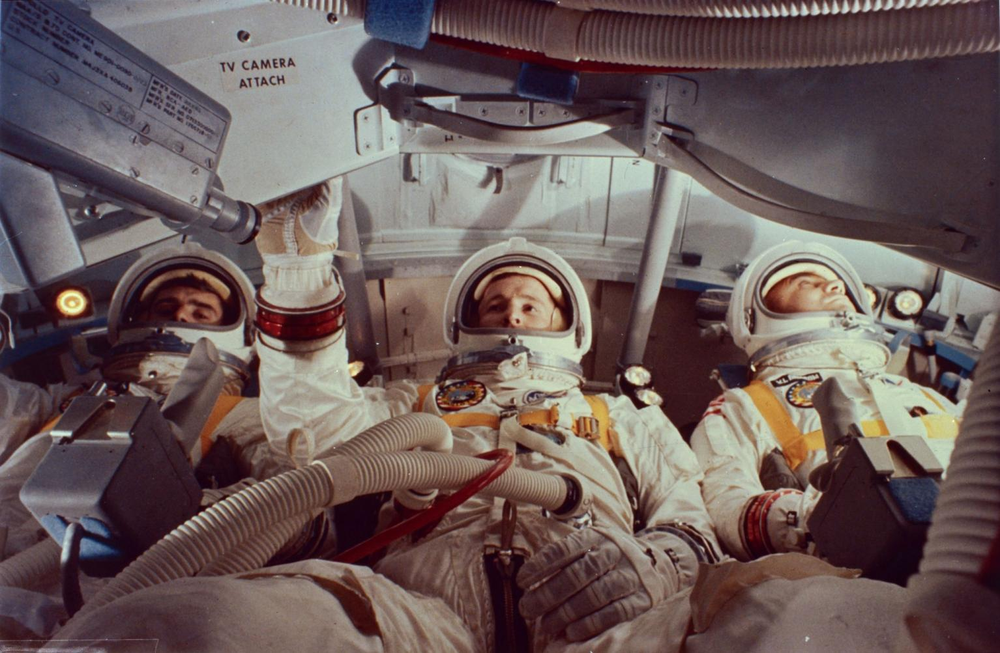

Apollo 1 was intended to be the first crewed mission of NASA's Apollo program, which aimed to land humans on the Moon and return them safely to Earth. Scheduled for launch in early 1967, the mission was desgined to test the Apollo Command Module in Earth orbit and serve as an important step toward the future lunar missions. The crew consisted of astronauts Virgil "Gus" Grissom, Edward H. White II, and Roger B. Chaffee.
The mission represented a new phase of American space exploration. Following the success of the Mercury and Gemini programs, NASA was preparing to send astronauts farther from Earth than ever before. Apollo 1 was expected to demonstrate that the new spacecraft was capable of supporting astronauts during extended missions and would lay the foundation for future journeys to the Moon.
On January 27, 1967, the crew participated in a launch rehearsal test at Kennedy Space Center. The spacecraft sat atop its rocket while engineers checked systems and communications. During the test, a spark ignited materials inside the command module.
Because the cabin was filled with pure oxygen at high pressure, the fire spread with incredible speed. Within seconds, the spacecraft was engulfed in flames. The inward-opening hatch made escape impossible, and rescue crews could not reach the astronauts in time. Grissom, White, and Chaffee all lost their lives.
The accident shocked NASA and the nation. It was the first time American astronauts had died during a space mission operation and served as a painful reminder of the risks involved in space exploration.
Following the tragedy, NASA suspended Apollo flights and launched a thorough investigation. Engineers discovered numerous design flaws, including flammable materials inside the spacecraft, wiring problems, and the difficult-to-open hatch.
The agency made major changes to the Apollo spacecraft. Flammable materials were removed, wiring systems were improved, and a new outward-opening hatch was installed that could be opened quickly during an emergency. These changes greatly increased astronaut safety and helped prevent similar accidents in the future.
Although Apollo 1 never launched into space, its impact on the Apollo program was enormous. The lessons learned from the accident led to safer spacecraft designs and more rigorous testing procedures. Many historians believe that the later success of the Apollo Moon landings was possible because NASA took the time to address the issues revealed by the Apollo 1 fire.
Today, Apollo 1 is remembered not for the mission that never flew, but for the sacrifice of its crew. Their dedication helped improve the safety of human spaceflight and contributed to every Apollo mission that followed.